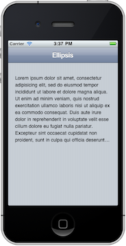

Sometimes you need to have a container of text with a fixed height and when the text is more than can fit, you want it to be clipped with ellipsis. This is easy to do with a single line of text, but for a block of text we need to use some JavaScript. ChocolateChip-UI provides the Element.UIParagraphEllipsis() function to allow you to handle this. For this to work you need to set the height of the container in pixels. This method checks the height and based on the line-height of the text, calculates how many lines of text can fit in the container. When the text exceeds that amount it will get clipped with an ellipsis.
One thing to be aware of, you can not use padding on the container being clipped so if you need padding, you'll need to wrap the clipped container in another container with padding.
In the image below the container is set to 200 pixels so the text gets clipped because the text is more than can fit in that height.
